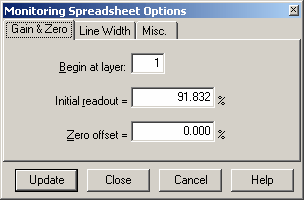

Gain and Zero
Gain and Zero Offset option
Navigation: OptiLayer Menu Commands > Results Menu > OptiLayer Monitor >
Gain and Zero Offset option
` <spectra_display.html>`__ ` <idh_monitor.html>`__ ` <linewidth.html>`__
The Gain and Zero options are accessible through the Options button in the left corner of the OptiMonitor window.

This option allows the user to select different gain (scaling factor) and zero offset level appropriate for a specific electronic control. The scaling factor is determined as a ratio of the initial readout value to the actual transmittance (reflectance) at the beginning of the deposition of the layer whose number is indicated in the “Begin at layer” field. Zero offset determines an additional shift of the origin after the scaling procedure. After pressing the “Update” button, these new values will be applied to the monitoring spreadsheet starting with the given layer until the last layer in the spreadsheet. The “Update” button applies the specified values to the monitoring spreadsheet without closing the Monitoring Spreadsheet Options dialog. The “Close” button updates the monitoring spreadsheet with the new values and closes the Monitoring Spreadsheet Options dialog. The “Cancel” button closes the Monitoring Spreadsheet Options dialog and discards any entered values.